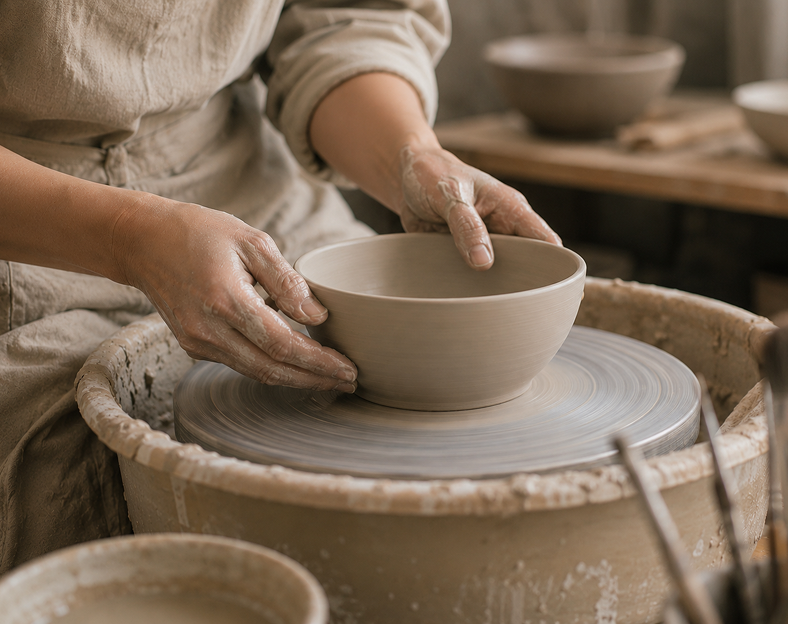
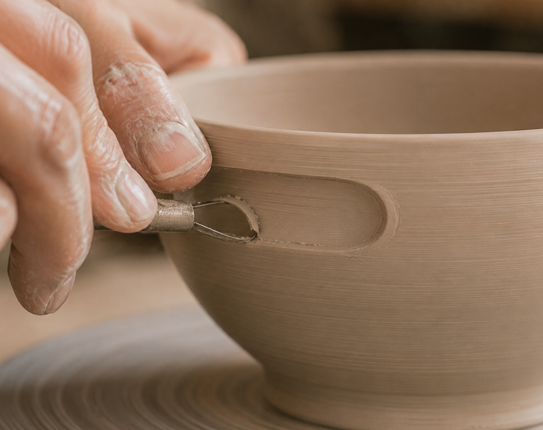
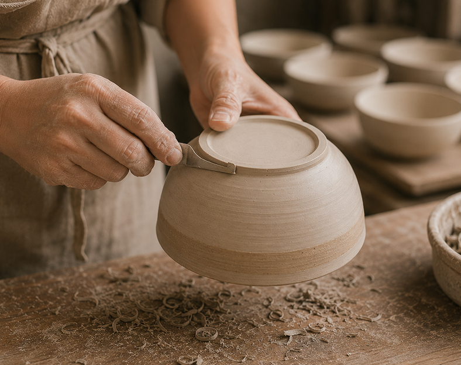
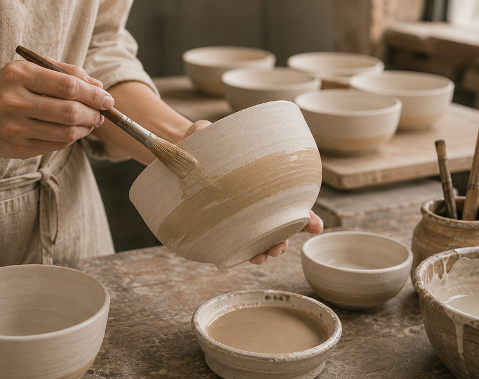
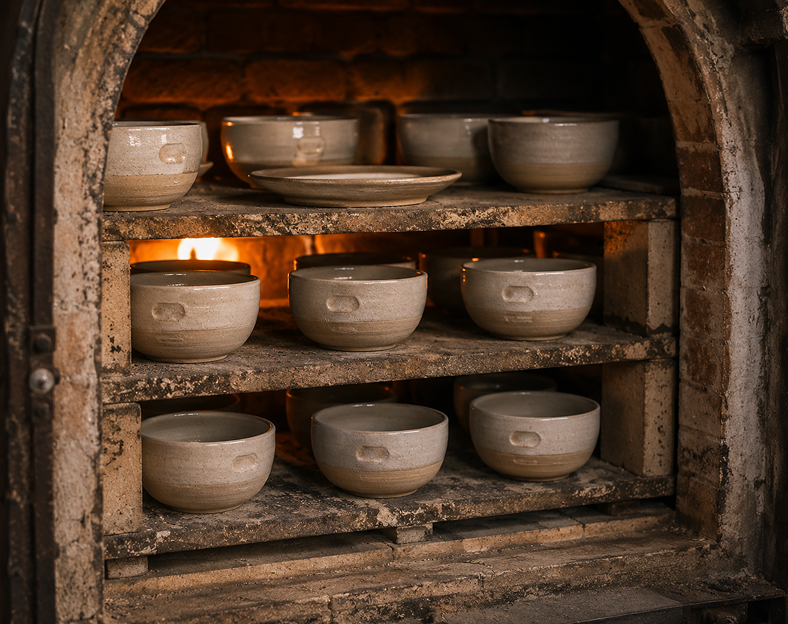
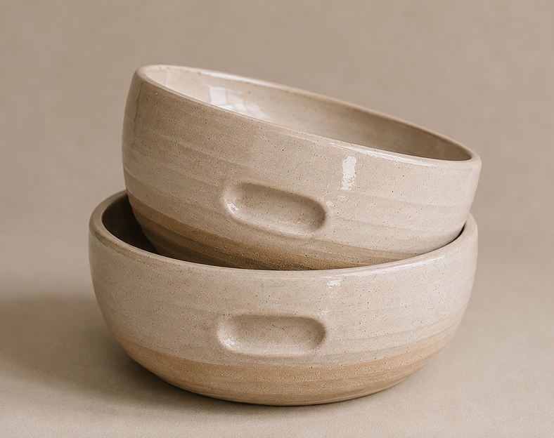

우브르의 그릇은
손을 위한 형태로 빚어집니다.
우브르는 손에 자연스럽게 안착하기 위해
형태와 균형, 깊이를 연구합니다.
모든 과정은 장인의 손에서 시작되어
일상의 편안함으로 완성됩니다.

-

01 형태 만들기
손에 안정적으로 안착하는 기본 형태와 균형을 만듭니다.
-

02 그립 조각
손가락이 자연스럽게 걸리는
흠을 섬세하게 조각합니다. -

03 표면 정리
거칠기를 다듬고
재료의 질감을 살립니다. -

04 초벌 후 유약과 색 작업
단단한 도자기 상태의 그릇에
자연스러운 색과 질감을 더합니다. -

05 재벌 소성
유약을 바른 후 다시 굽습니다.
-

06 완성
장인의 손을 거쳐 일상에서
오래 사용할 수 있는 그릇이 됩니다.